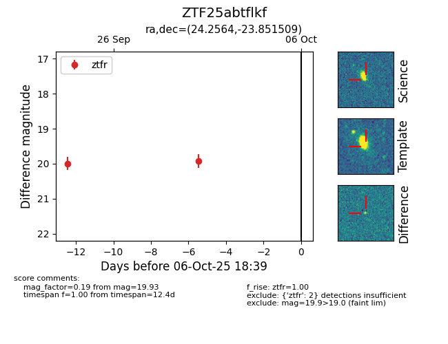

FINK: ZTF25abtflkf
Lasair: ZTF25abtflkf
ALeRCE: ZTF25abtflkf
ZTF25abtflkf (ztf,fink)
equatorial (ra, dec) = (24.2564,-23.85151)
galactic (l, b) = (197.7813,-79.20848)

last ztfr=19.93
2 ztfr detections